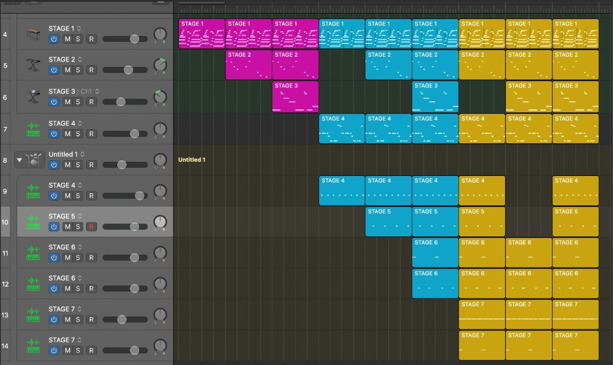

Die Hauptidee dieses Spiels ist ein 3D-Survival-Shooter in der Ego-Perspektive mit Fokus auf audiovisuelle Effekte.
Hier spricht man von Farben, Animationen und, besonders in diesem Spiel, dynamischer Musik.
Die Spieler sollen in einem rundenbasierenden Ego-Shooter Game versuchen zu überleben.
In der ersten Runde werden die Spieler mit Gegnern konfrontiert und müssen sie alle besiegen.
In der nächsten Runde werden die Spieler mit mehr Gegnern konfrontiert.
Je höher die Runde ist, desto stärker bzw. mehr halten die Gegner aus und es werden pro Runde immer mehr Gegner kommen.
Sprich, je weiter die Spieler kommen, desto schwieriger und intensiver wird die Runde (Welle).
Diese Intensität wird mit prozeduraler Musik unterstrichen, indem mehr musikalische Elemente hinzukommen.
Durch interaktive und adaptive Sounds, sowie einer Vielzahl und Zufälligkeit der Spielaktionen, die bei einem 3D-Survival Ego-Shooter ermöglicht werden,
entstehen generative Effekte. Durch bestimmte Game-Parameter werden weitere musikalische Elemente hinzugefügt.
Für jedes musikalische Element, das hinzukommt, soll die Musik intensiver werden.
Durch Interaktion werden indirekt oder direkt Sound-Events getriggert, die harmonisch zur aktuellen Hintergrundmusik sind.
Es wird versucht natürliche Sounds anzugewendet, die zu einem Objekt oder einer Aktion Sinn ergeben und wenig bis gar nicht variieren.
Das hat das Ziel, dass die Spieler nicht nur die Musik hören, sondern auch aktiv dazu beitragen.
Sounddesign
Für das Sounddesign wurden die Sounds in vier Elemente aufgeteilt. Die Aktionen, welche die Spieler machen, die Positionierung, in der sich die Spieler befinden, die Runden, wie weit die Spieler vorangekommen sind und die Gegner, ob diese besiegt wurden oder nicht. Wichtig zu erwähnen ist, dass alle Sounds harmonisch und quantisiert wurden.
Zum einen haben wir das Schießen der drei unterschiedlichen Waffen. Bei dem Maschinengewehr und der Pistole wird ein einzelner Ton abgespielt. Wird öfter geschossen, entsteht eine eintönige Melodie. Bei der Schrotflinte wird ein Akkord abgespielt. Alle Schüsse wurden auf 1/16 Bar quantisiert. Beim Laufen oder Sprinten werden Loops abgespielt, die auf 1 Bar quantisiert wurde. Der Loop für das Sprinten ist doppelt so schnell, wie der Loop für das Laufen. Hierbei wurden die Methoden “Interactive Audio” sowie “Vertical Layering” verwendet.
Für jedes der drei Areale gibt es einen Beat/Track. Bewegen sich die Spieler zu einer andere Area, wird zu einem anderen Track gewechselt. Alle Tracks wurden mit dem selben Notenschlüssel komponiert, damit der Übergang besser klingt. Die Aktionssound variieren sich nach Area. Hier wurden die Methoden “Horizontal Sequencing” und “Adaptive Audio” angewendet.
Für jede Runde, die man erreicht, wird eine neue Schicht/Loop hinzugefügt. Von Runde 1-4 wird jeweils eine neue Loop hinzugefügt oder ausgetauscht. In Runde 5 wird zur einer Bridge gewechselt. Und in Runde 6 werden alle Loops, die in Runde 1-4 hinzu kamen, wieder hinzugefügt. Hier nutzte man “Adaptive Audio” und “Vertical Layering”.